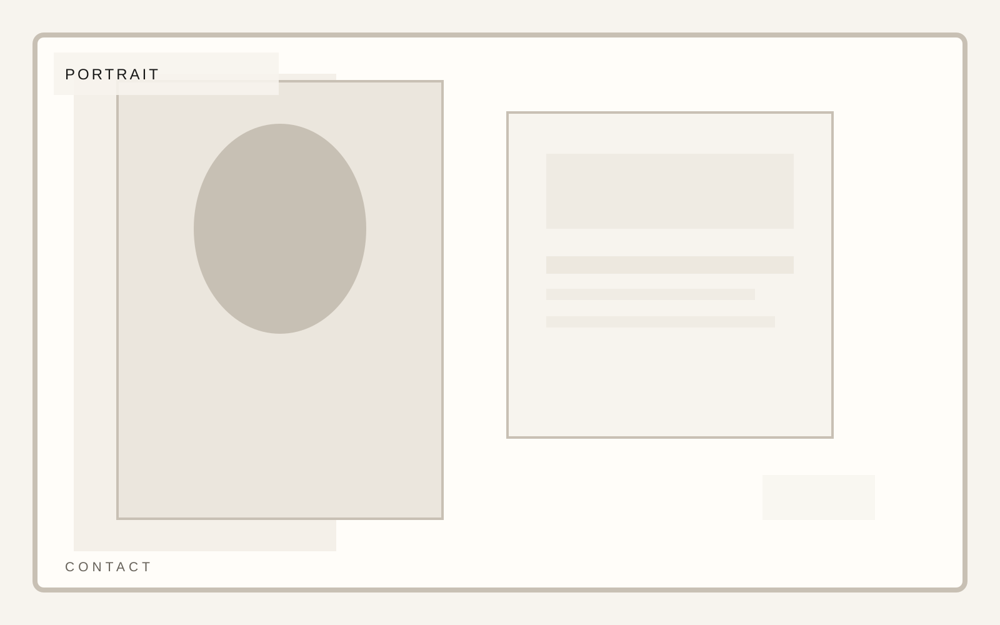

Practice
Editorial and portraiture
Photography portfolio
A portfolio template for photographers and image-makers who need rigorous composition, project rhythm, and clean editorial restraint. The inquiry path should not break the tone of the portfolio.
Photography portfolio
Inquiry belongs in the same tonal register as the work: light, controlled, and image-aware.
